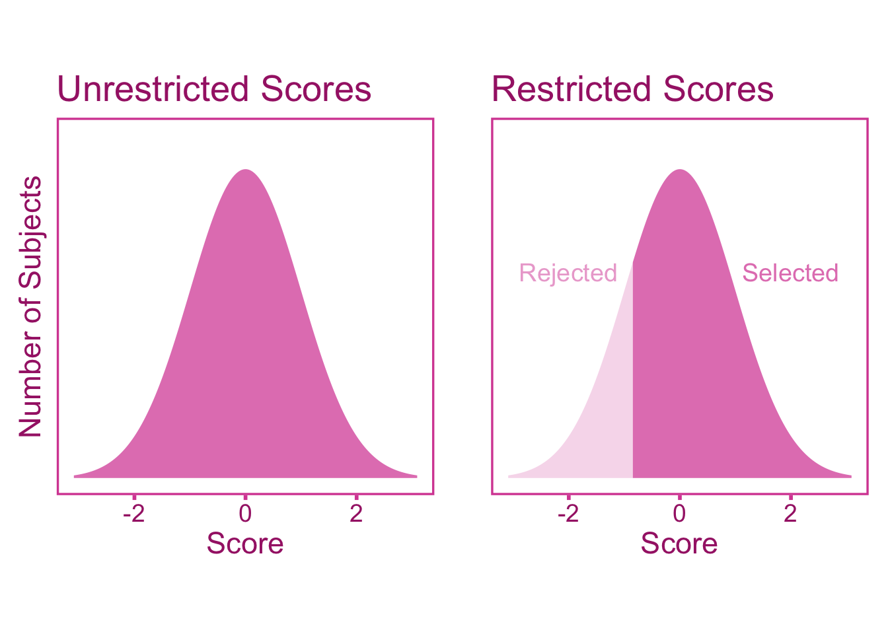
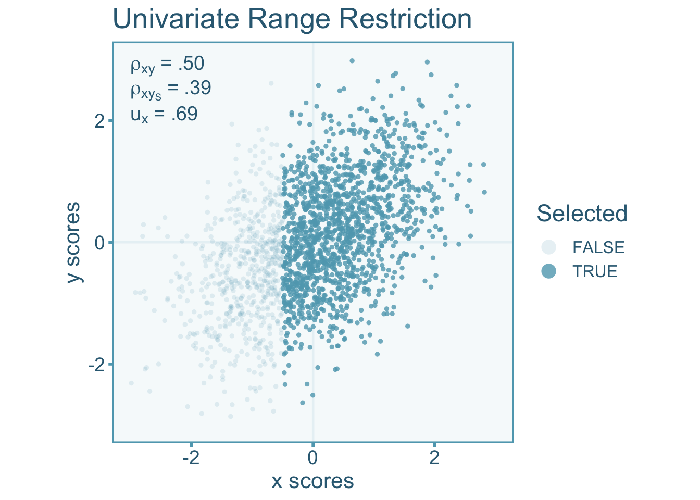
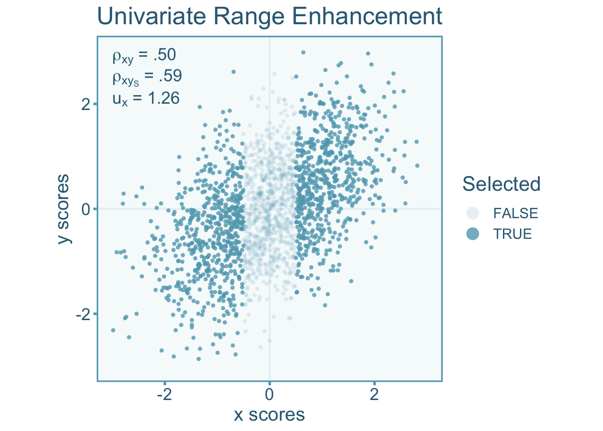
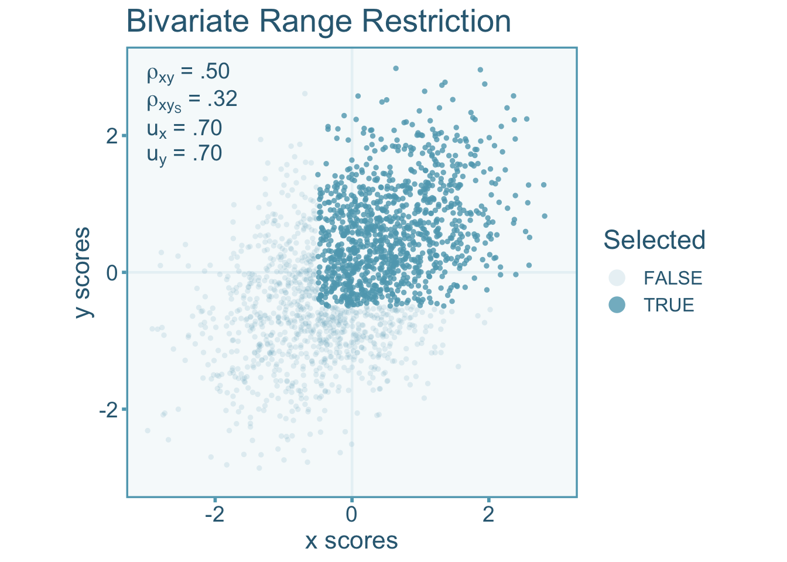
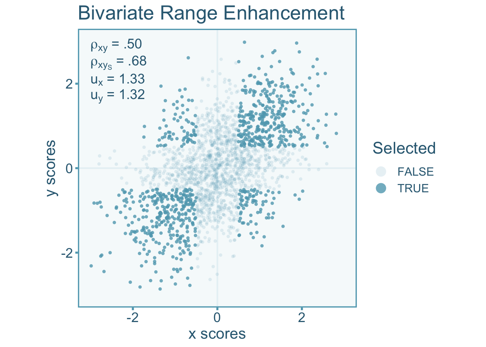

9.1 Introduction
Direct selection occurs when subjects are explicitly selected based on some eligibility criterion on the variables of interest (rather than a third variable). Range restriction is a form of selection bias that describes a situation where there is less variation in our sample then there is in the population. Whereas range enhancement indicates that there is more variation in a sample then there is in the population. Direct range restriction/enhancement biases the variances and effect size estimates.
9.2 An Applied Example of Direct Range Restriction
Imagine a tech company that wants to assess the correlation between years of experience and programming proficiency for their software engineers. They have two primary divisions: Division A and Division B. Division A primarily hires entry-level software engineers, with less than 3 years of experience. Division B, on the other hand, hires experienced software engineers with more than 3 years of experience. The company decides to conduct a study to assess the correlation between years of experience and programming proficiency. However, they only collect data from Division A due to logistical reasons, assuming that the relationship found there would be represent the entire company. In this scenario, direct range restriction occurs because the sample used for the study (Division A) represents a narrow range of years of experience (0-3 years) compared to the broader range present in the entire company (0+ years). Consequently, the standard deviation will be smaller in the sample then it would if we had sampled from the entire company. As we will see in later sections of this chapter, the observed correlation between years of experience and programming proficiency would be attenuated, underestimating the true correlation.
9.3 Indexing Range Restriction with the u-ratio
The distribution of scores in the unrestricted pool of individuals will exhibit a greater (or lesser) degree of variability compared to the sample that has been selected into the study. Therefore the standard deviation of scores in the unrestricted population (\(\sigma_x\)) will differ from that of the selected (restricted/enhanced) sample (\(\sigma_{x_{S}}\)). To index the difference between the two standard deviations, we can calculate the \(u\)-ratio Wiernik and Dahlke (2020). The \(u\)-ratio is the ratio between the standard deviations of the selected sample to the unrestricted sample such that,
\[ u_x = \frac{\sigma_{x_S}}{\sigma_x} \]
The \(u\)-ratio in cases of range restriction will exist in the interval (0–1). Conversely, when the \(u\)-ratio is greater than 1 it is indicative of range enhancement. The unrestricted standard deviation is often quite difficult to acquire since we do not usually have access to the unrestricted group. However, the unrestricted standard deviation can be estimated from some reference study that has been conducted on the unrestricted group. This often comes in the form of standardization samples or norm samples (obtained from test manuals) if the unrestricted group is the general population. For example, the distribution full-scale IQ scores derived from the Wechsler Adult Intelligence Test has a standard deviation of 15 in the US population (Wechsler 2008). We can use this estimate as the standard deviation for the unrestricted population. Lets say we select a sample from members of Mensa, a high IQ society, who are specifically selected on the basis high IQ scores. If the standard deviation of Mensa members is 5, then the \(u\)-ratio would be,
\[ u_x = \frac{\sigma_{x_S}}{\sigma_x} = \frac{5}{15}= .33\, . \]
However it is not always the case that an estimate of the unrestricted standard deviation is readily available. Therefore if the reliability coefficient from the unrestricted and selected sample can be used to estimate the \(u\)-ratio,
\[ u_x = \sqrt{\frac{1-r_{xx'}}{1-r_{xx'_S}}}. \]
Where \(r_{xx'_S}\) and \(r_{xx'}\) are the reliability estimates within the selected and unrestricted groups respectively.
9.4 Correcting Correlations for Direct Range Restriction
9.4.1 Defining our Estimand
For our study we want to estimate the population correlation of the unrestricted scores of the independent (\(x\)) and dependent variable (\(y\)). We can denote this correlation as \(\rho_{xy_S}\). The restricted population correlation can be denoted as \(\rho_{xy_S}\). Within a study that suffers from range restriction, the study correlation (\(r_{xy_S}\)) will be biased relative to our estimand, \(\rho_{xy}\). This bias can be denoted by \(a\) such that,
\[ r_{xy} = a \rho_{xy_S} + \varepsilon. \]
Therefore an unbiased estimate of the unrestricted population correlation would be
\[ r_c = \frac{ r_{xy_S} }{ a}. \]
9.4.2 Artifact Correction for Correlations
The Univariate Case
Range restriction (or enhancement) in either the independent or dependent variable will induce bias into the correlation coefficient. Let us consider a case where just the independent variable is restricted (or enhanced) such that \(u_x\neq 1\), but the dependent variable is not restricted (directly). It is important to note, that if there is direct selection one of the two variables, then there will be indirect selection in the other variable too if the two are correlated. This would suggest that if \(u_x\neq 1\) and \(\rho_{xy}\neq 0\) then \(u_y\neq 1\). Lets visualize the correlation between independent (\(x\)) and dependent (\(y\)) variables under this range restriction by only selecting individuals above some cut off. The scores of individuals that have been selected will show less variance than the entire pool of individuals. Specifically, the scenario below shows a \(u\)-ratio of about 0.69 in the independent variable. We see in the figure that the correlation in the restricted scores (\(\rho_{xy_S}\)) is attenuated relative to the unrestricted (true) correlation (\(\rho_{xy}\)).

We can also visualize what happens to the correlation when the range is enhanced. Enhancement can be accomplished by selecting individuals at the ends of the distribution (Taylor and Griess 1976). In the visualization below, we see an opposite effect on the correlation, that is, an over-estimate of the unrestricted correlation rather than an attenuation like we see under range restriction. The scenario below has a \(u\)-ratio of about 1.26 in the independent variable.

It starts to become apparent that if \(u_x>1\) (i.e., \(\sigma_x>\sigma_{x_S}\)) the observed correlation over-estimates the true, unrestricted correlation and under-estimates the unrestricted correlation when \(u_x<1\) (i.e., \(\sigma_x<\sigma_{x_S}\), Sackett and Yang 2000).
A bias correction formula for univariate direct range restriction was first developed by Pearson (1903) and provided more recently by Hunter and Schmidt (1990). To correct for the systematic bias in correlations, we can use the \(u\)-ratio of the independent variable such that,
\[ r_c = \frac{r_{xy_S}}{u_x\left(1+r_{xy_S}^2\left[\frac{1}{u^2_x}-1\right]\right)} \tag{9.1}\]
Where the sampling variance of the corrected correlation is
\[ \sigma^2_{\varepsilon_c} = \sigma^2_{\varepsilon_o}\left(\frac{r_c}{r_{xy_S}}\right)^2. \tag{9.2}\]
9.4.2.1 The Bivariate Case
Bivariate direct range restriction/enhancement occurs when the variability in both independent and dependent variables within the selected sample is less than or greater than the variability in the unrestricted population. Let us consider a case where just the independent variable is restricted (or enhanced) such that \(u_x\neq 1\) and \(u_y \neq 1\). Like we showed for the univariate case, let’s visualize the correlation between independent (\(x\)) and dependent (\(y\)) variables under range restriction by only selecting individuals above some cut off point for both \(x\) and \(y\). The scores of individuals that have been selected will show less variance than the entire pool of individuals. Specifically, the scenario below shows a \(u\)-ratio of about 0.70 in the independent variable and dependent variables. We see in the figure that the correlation in the restricted sample (\(\rho_{xy_S}\)) is attenuated relative to the unrestricted (true) correlation (\(\rho_{xy}\)).

Likewise let’s visualize what happens to the correlation when the range is enhanced. Enhancement in both variables can be accomplished by selecting individuals at the ends of the distribution of \(x\) and \(y\). In the visualization below, we observe an over-estimation of observed correlation relative to the unrestricted correlation. The scenario below has a \(u\)-ratio of about 1.32 in both the independent variable and dependent variable.

A bias correction formula for bivariate range restriction is much more complicated than the univariate formulation. This is due to the fact that there is inter-dependence between the correlation, the \(u\)-ratio of \(x\), and the \(u\)-ratio of \(y\). For instance, if \(x\) and \(y\) are positively correlated and if there is direct range restriction in \(x\) this will also restrict the variability in y even if there is no range restriction in \(y\). To break down the correction formula into simpler parts, let us first define a factor we will denote with \(\psi\),
\[ \psi = \frac{u_x u_y\left(r_{xy_S}^2-1\right)}{2r_{xy_S}} \tag{9.3}\] This factor contains all the parameters needed to correct the correlation coefficient under direct selection (\(r_{xy_S}\)). Then we can plug it into the formula
\[ r_c = \psi + \text{sign}\left[r_{xy_S}\right]\sqrt{\psi^2+1} \tag{9.4}\]
Where the sampling variance of the corrected correlation is,
\[ \sigma^2_{\varepsilon_c} = \sigma^2_{\varepsilon_o}\left(\frac{r_c}{r_{xy_S}}\right)^2. \tag{9.5}\]
9.4.3 Correcting Correlations in R
To correct correlations for range restriction we can start by simulating data from the the mvrnorm function in the MASS package. Lets first simulate 200 data points.
# load packages
# install.packages('MASS')
library(MASS)
# set seed
set.seed(343)
# define parameters
rho <- .50
n <- 200
# sample data from a bivariate normal distribution
data <- mvrnorm(n = n,
mu = c(0,0),
Sigma = data.frame(x = c(1,rho),
y = c(rho,1)),
empirical = TRUE)
# obtain unrestricted scores
x <- data[,1]
y <- data[,2]Univariate Direct Range Restriction
We can start with univariate direct range restriction by selecting only on the independent variable. We will select only the values above the mean.
# obtain scores when x > Mean(x)
selected <- x > mean(x)
xS <- x[selected]
yS <- y[selected]
# calculate correlation between unrestricted and restricted scores
rxy <- cor(x,y) # unrestricted
rxyS <- cor(xS,yS) # restricted
# print results
rbind(paste0('unrestricted: rxy = ',round(rxy,2)),
paste0('restricted: rxyS = ',round(rxyS,2))
) [,1]
[1,] "unrestricted: rxy = 0.5"
[2,] "restricted: rxyS = 0.32"As expected, we observe an attenuation of the correlation under range restriction. Now lets calculate the \(u\)-ratios for both variables. Remember that even though we only selected on \(x\), we should expect the variability in \(y\) in the restricted sample to also be smaller than the unrestricted sample when \(x\) and \(y\) are correlated.
# calculate u-ratios
ux <- sd(xS)/sd(x)
uy <- sd(yS)/sd(y)
# print results
rbind(paste0('ux = ',round(ux,2)),
paste0('uy = ',round(uy,2))
) [,1]
[1,] "ux = 0.59"
[2,] "uy = 0.86"As anticipated, not only is \(u_x\) below 1 indicating range restriction, but also \(u_y\) is slightly below 1 since \(x\) and \(y\) covary. Now we can apply the correction for univariate direct range restriction by hand from Equation 10.1 and Equation 10.1.
# correct the restricted correlation
rc <- rxyS / (ux * sqrt(1 + rxyS^2 * (1/ux^2-1)) )
# acquire sample size from
n <- length(xS)
# calculate the observed correlation sampling variance
var_e_o <- (1-rxyS^2)^2 / (n-1)
# correct sampling variance
var_e_c <- var_e_o * (rc/rxyS)^2
# print results
rbind(paste0('corrected cor: r = ',round(rc,2)),
paste0('corrected var: var_e = ',round(var_e_c,3))
) [,1]
[1,] "corrected cor: r = 0.49"
[2,] "corrected var: var_e = 0.02"The correction formula produced a very close estimate of the true population correlation (\(r_c = .49\) vs \(\rho_{xy}=.50\)). Lets also correct the correlation using the correct_r function in the psychmeta package, psychmeta (Dahlke and Wiernik 2019).
# load packages
# install.packages('psychmeta')
library(psychmeta)
# correct the restricted correlation for univariate direct range restriction
correct_r(rxyi = rxyS,
correction = 'uvdrr_x', # uvdrr_x = univariate direct range restriction in x
ux = ux,
n = n)Correlations Corrected for Measurement Error and Univariate Direct Range Restriction:
---------------------------------------------------------------------------------------
value CI_LL_95 CI_UL_95 n n_effective
1 0.492 0.209 0.685 97 40.8We can see that the correction made by the correct_r function provides identical results to the one done by hand.
9.4.3.1 Bivariate Direct Range Restriction
For bivariate direct range restriction we can select values above the mean in both independent and dependent variables.
# obtain scores when x > Mean(x) and y > Mean(y)
selected <- x > mean(x) & y > mean(y)
xS <- x[selected]
yS <- y[selected]
# calculate correlation between unrestricted and restricted scores
rxy <- cor(x,y) # unrestricted
rxyS <- cor(xS,yS) # restricted
# print results
rbind(paste0('unresticted: rxy = ',round(rxy,2)),
paste0('restricted: rxyS = ',round(rxyS,2))
) [,1]
[1,] "unresticted: rxy = 0.5"
[2,] "restricted: rxyS = 0.29"Notice that there is even more attenuation in the selected correlation coefficient than there was in the univariate case. Now we can correct for bivariate range restriction by hand using Equation 9.3, Equation 9.4, Equation 9.5.
# calculate the factor, psi
psi <- ux*uy*(rxyS^2-1) / (2*rxyS)
# calculate the corrected correlation using psi
rc <- psi + sign(rxyS)*sqrt(psi^2 + 1)
# acquire sample size from
n <- length(xS)
# calculate the observed correlation sampling variance
var_e_o <- (1-rxyS^2)^2 / (n-1)
# correct sampling variance
var_e_c <- var_e_o * (rc/rxyS)^2
# print results
rbind(paste0('corrected cor: r = ',round(rc,2)),
paste0('corrected var: var_e = ',round(var_e_c,3))
) [,1]
[1,] "corrected cor: r = 0.48"
[2,] "corrected var: var_e = 0.036"Again, we see that the corrected correlation closely resembles the unrestricted correlation (\(r_c=.48\) vs \(\rho_{xy}=.50\)). lets
# load packages
# install.packages('psychmeta')
library(psychmeta)
# correct the restricted correlation for univariate direct range restriction
correct_r(rxyi = rxyS,
correction = 'bvdrr', # bvdrr = bivariate direct range restriction
ux = ux,
uy = uy,
n = n)Correlations Corrected for Measurement Error and Bivariate Direct Range Restriction:
---------------------------------------------------------------------------------------
value CI_LL_95 CI_UL_95 n n_effective
1 0.48 0.0943 0.689 64 17.3We can see that the correction exactly reflects the correction done by hand.